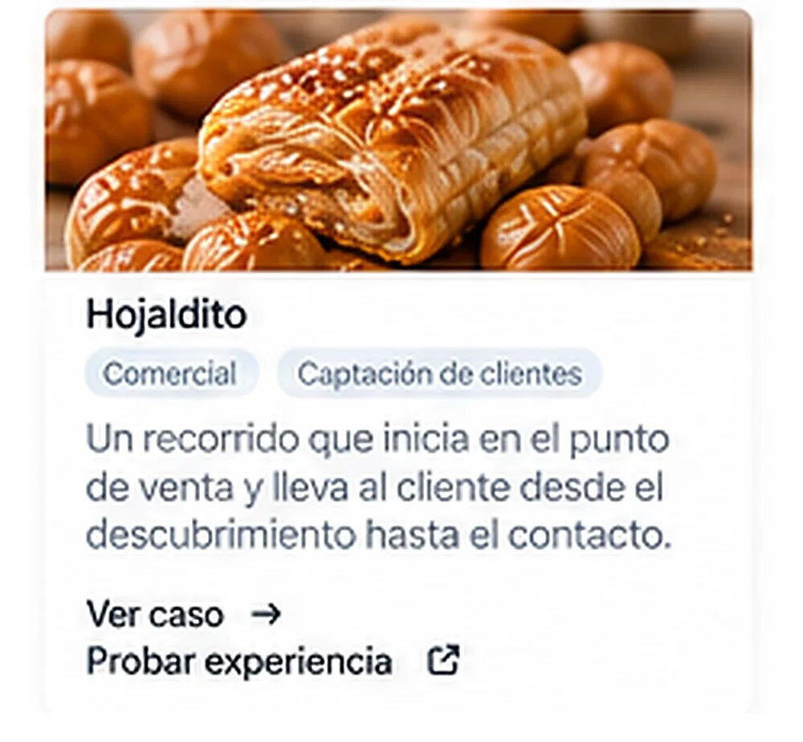

Un recorrido digital para que cada interesado vea sus condiciones antes de escribir y ningún contacto se pierda.
Hojaldito vende pasteles de hojaldre a negocios de Tunja. Su reto es conseguir nuevos puntos de distribución y saber en qué paso se queda la gente que se interesa.

Hojaldito llega a sus puntos por recomendación, por punto físico y por muestras.
Hoy los contactos nuevos dependen de esas tres vías y todo se explica uno por uno por WhatsApp. No hay un registro de cuántas personas se interesan ni de en qué paso se quedan.
Cada persona necesita saber, antes de escribir, si Hojaldito le sirve.
Hay un pedido mínimo que depende de la zona, un horario para pedir y otro para recibir. Cuando esas condiciones aparecen tarde, algunas personas dejan de avanzar, y a quien no responde no se le vuelve a escribir.
Condiciones por zona
Un mínimo en Tunja y otro en los municipios cercanos, con su horario de pedido y de entrega.
Contactos sin registro
Las conversaciones quedan sueltas, así que no se puede medir dónde se cae la gente.
Una puerta de entrada para cada intención y un solo registro.
El recorrido cambia según de dónde llega la persona: recomendación, punto físico, muestra, publicidad o un cliente que ya compra. Cada una ve primero lo que necesita, y todas terminan en un contacto registrado con su estado.
Vive el recorrido tal como lo vive un interesado real.
Elige un camino y avanza pantalla por pantalla, igual que lo haría alguien real llegando a la página. Es un prototipo: muestra cómo funcionaría y todavía no está en operación.
De una visita a un contacto registrado: lo que muestra el prototipo.
Una experiencia digital que muestra las condiciones desde el inicio, deja cada contacto guardado con su estado y recuerda una sola vez a quien no responde. Es un prototipo en prueba: todavía no está en operación ni hay resultados que medir.
“No propuse una página para Hojaldito. Propuse el camino que convierte una visita en un contacto que se puede seguir.”Mi lectura de este caso
¿Tu negocio necesita algo parecido?
Cuéntame qué quieres que tus clientes puedan hacer sin llamarte. Te respondo en menos de 24 horas.